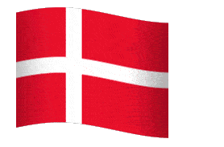
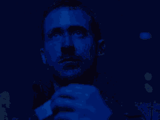

Hello welcome my website i hope you en
joy i spend very much time make this so it very nice if you check me out on m
sn and add me there
Der var så dejligt ude på landet; det var sommer, kornet stod gult, havren grøn, høet var rejst i stakke nede i de grønne enge, og der gik storken på sine lange, røde ben og snakkede ægyptisk, for det sprog havde han lært af sin moder. Rundt om ager og eng var der store skove, og midt i skovene dybe søer; jo, der var rigtignok dejligt derude på landet! Midt i solskinnet lå der en gammel herregård med dybe kanaler rundt om, og fra muren og ned til vandet voksede store skræppeblade, der var så høje, at små børn kunne stå oprejste under de største; der var lige så vildsomt derinde, som i den tykkeste skov, og her lå en and på sin rede; hun skulle ruge sine små ællinger ud, men nu var hun næsten ked af det, fordi det varede så længe, og hun sjælden fik visit; de andre ænder holdt mere af at svømme om i kanalerne, end at løbe op og sidde under et skræppeblad for at snadre med hende.